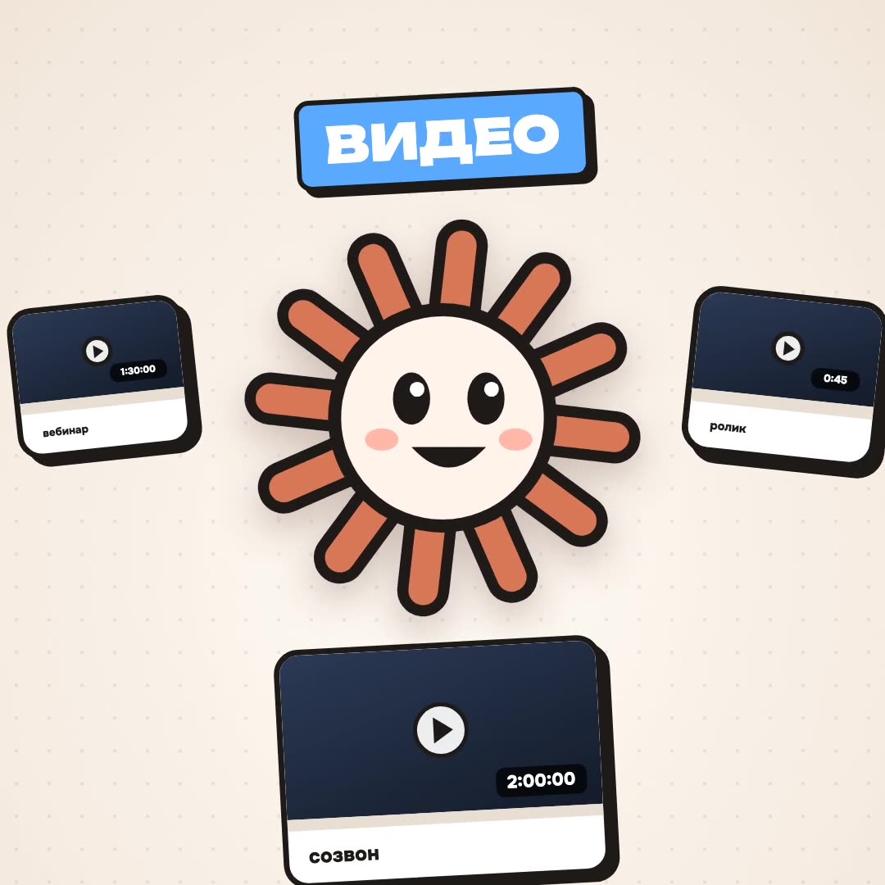

1
Поставить Watch
Watch — бесплатный открытый скилл. Даёшь ссылку или файл — он разбирает видео на кадры с таймкодами и расшифровку речи, и Claude смотрит запись целиком: что на экране, что говорят и когда.
В приложении Claude: Customize → Plugins → Add → Add marketplace → Add from a repository, вставь https://github.com/bradautomates/claude-video, нажми Sync и поставь Watch.
В терминале: /plugin marketplace add bradautomates/claude-video, затем /plugin install watch@claude-video.
Скопируй и отправь в Claude Code
Поставь мне скилл Watch: /plugin marketplace add bradautomates/claude-video, затем /plugin install watch@claude-video. Проверь, что у меня есть Python 3.10+, FFmpeg и свежий yt-dlp, и поставь недостающее сам. Потом подскажи, как бесплатно получить ключ Google AI Studio (GEMINI_API_KEY), чтобы видео разбиралось быстрее.
Без ключа тоже работает — локально, на твоём компьютере. С бесплатным ключом Gemini быстрее, но твои файлы ненадолго загружаются в Google (потом удаляются). Для приватных записей проси «локальным движком».